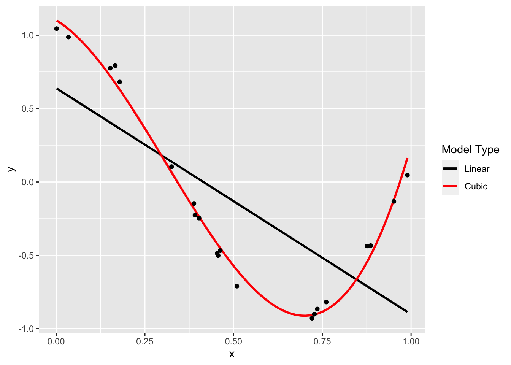
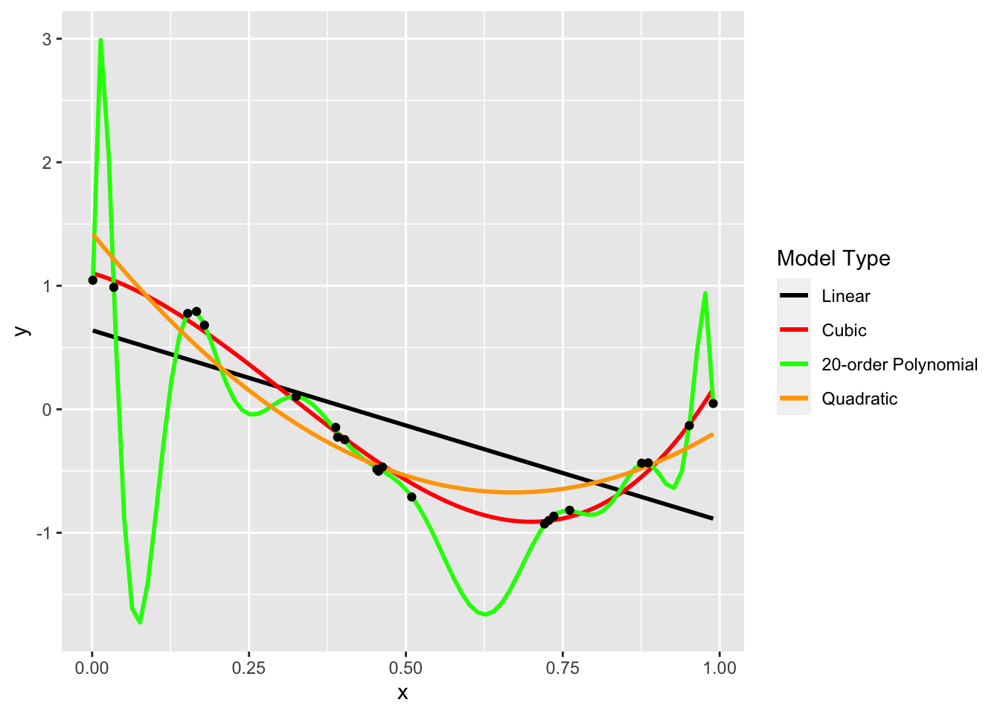

# data setting taken from: https://scikit-learn.org/stable/auto_examples/model_selection/plot_underfitting_overfitting.html
true_fun <- function(x){
cos(1.5 * pi * x)
}
set.seed(1234)
n_samples <- 50
x <- runif(n_samples)
y <- true_fun(x) + runif(n_samples) * 0.1
dat <- tibble(x = x, y = y)dat %>% ggplot(aes(x = x, y = y)) +
geom_smooth(method = "lm", se = F, aes(color = "black"))+
geom_smooth(method = "lm",formula = y ~ poly(x,3), se = F, aes(color = "red")) +
geom_point()+
scale_color_identity(guide = "legend",
name = "Model Type",
breaks = c("black", "red"),
labels = c("Linear", "Cubic"))
dat %>% ggplot(aes(x = x, y = y)) +
geom_smooth(method = "lm", se = F, aes(color = "black"))+
geom_smooth(method = "lm",formula = y ~ poly(x,3), se = F, aes(color = "red"))+
geom_smooth(method = "lm",formula = y ~ poly(x,15), se = F, aes(color = "green"))+
geom_point() +
scale_color_identity(guide = "legend",
name = "Model Type",
breaks = c("black", "red", "green"),
labels = c("Linear", "Cubic", "Degree-15 Polynomial"))dat %>% ggplot(aes(x = x, y = y)) +
geom_smooth(method = "lm", se = F, aes(color = "black"))+
geom_smooth(method = "lm",formula = y ~ poly(x,3), se = F, aes(color = "red"))+
geom_smooth(method = "lm",formula = y ~ poly(x,15), se = F, aes(color = "green"))+
geom_smooth(method = "lm",formula = y ~ poly(x,2), se = F, aes(color = "orange"))+
geom_point() +
scale_color_identity(guide = "legend",
name = "Model Type",
breaks = c("black", "red", "green", "orange"),
labels = c("Linear", "Cubic", "Degree-15 Polynomial", "Quadratic"))
knitr::include_app("https://pvossler.shinyapps.io/polynomials_plot/", height = "600px")